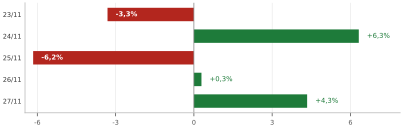
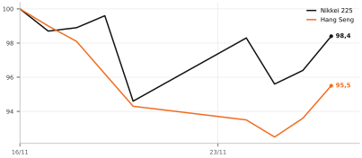

Chip e Asiapag. 2 del giornale
Il rimbalzo di Seul poggia su un fondo pubblico che ancora non c'è
Per la stampa coreana pesano acquisti dopo il crollo, future americani e attesa del fondo. A nostro avviso conta soprattutto l'ultima: il 24/11 il Kospi era salito del 6,3% e il giorno dopo aveva restituito quasi tutto, un rimbalzo spento in fretta. A Tokyo e a Hong Kong il recupero è più lento.

Il Kospi risale due sedute dopo il crollo: la caduta è finita? Per ora è un rimbalzo, e la stampa coreana lo lega a un fondo con cui lo Stato interviene per frenare una vendita prolungata. Bastano le attese: se chi vende pensa che arriverà un compratore pubblico, ha meno fretta di vendere a qualunque prezzo.
Oggi i compratori sono gli stranieri e le istituzioni, mentre i piccoli risparmiatori hanno venduto per 1,77 mila miliardi di won. Il won si è rafforzato a 1.338,60 per dollaro.

Per un'analista di Kiwoom Securities, finché non arriva la domanda del fondo lo slancio del rimbalzo può restare limitato, anche se non c'è motivo di vedere tutto nero.
Sui chip pesa una notizia di stamattina. Nvidia e Kioxia hanno mostrato una tecnologia che usa dischi a stato solido per allargare la memoria delle schede grafiche. Samsung Electronics e SK Hynix chiudono in rialzo del 4,5% e del 5,4%. Il Kosdaq, il listino dei titoli più piccoli, sale di circa l'8,1%. Per KED Global il Kospi si avvicina ai 5.000 punti sulla speranza di un fondo di salvataggio più grande.
Fuori dalla Corea il recupero è più lento. Dal 16/11 il Nikkei è ancora sotto dell'1,6% e Hong Kong del 4,5%: il rimbalzo di oggi riempie una parte della buca, non tutta.
E quindi
Sopra i 5.006 punti del 24/11 il rimbalzo avrebbe un primo segnale di forza; sotto i 4.697,51 del 25/11 il fondo avrebbe fallito la prova.
Da guardare
Conta se Seul annuncia l'ampliamento del fondo, oggi attorno a 10,8 mila miliardi di won, e se gli stranieri continuano a comprare. Un nuovo calo a fondo già attivo smentirebbe la lettura.
Fonti: Seoul Economic Daily, Digitaltoday, KED Global (Yonhap); chiusure di Nikkei e Hang Seng da FMP.
Leggila impaginata nel giornale, pag. 2 ›